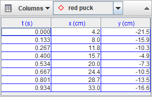

The datatable view displays a table of a track's data. It has its own toolbar for selecting the track and visible data columns. The data displayed in the table can be analyzed with the Data Tool or copied to the clipboard for pasting into a spreadsheet or other application.
By default, datatables are refreshed automatically when changes in data occur (e.g. when marking points). But when working with very long videos it can be useful to turn off auto-refresh in order to speed up the marking process. To turn off auto-refresh, click the Refresh button on the toolbar and uncheck the Auto-refresh item in the popup menu. When done marking, turn auto-refresh back on or refresh the data manually by choosing the Refresh item in the popup menu.
Select a track from the dropdown list on the datatable view's toolbar.
Select the data columns displayed in the table by clicking the Data button and checking those of interest. The time column is always displayed.
Cells for which no data exists are empty. In particular, velocities and accelerations cannot be determined at the beginning, end, or where there are gaps in the position data.

Click a column header to sort rows in ascending order of the data in the clicked column. The sorted column name is displayed in bold font.
Right-click the data table and select the Format Columns... item from the popup menu to display the Number Format dialog.

In the dialog, select the names of the columns you wish to format. Use the shift and control keys to add or remove names from the selection. Enter the desired format into the format field to apply it to the selected columns. The sample field shows the result of the format applied to the number PI.


Click the Help button to display sample formats.

Click and drag in the table to select cells. Double-click any cell to select all cells, or double-click a column header to select that column.
Control-click a cell to add or remove that row and column to or from the current selection. Control-click a column header to add or remove that column to or from the current selection.
Shift-click a cell to add that and all intervening rows and columns to the current selection. Shift-click a column to add that and all intervening columns to the current selection.


Click the blank area below the data table to deselect all cells.
Right-click the table and select Copy Selected Data from the popup menu to copy the selected cells to the clipboard. On Mac, select one cell, then hold down both the shift and control keys while clicking on a second cell to select the enclosed range and pop up the Copy menu.
Cell values may be copied in full precision scientific notation or using the format displayed in the table.

By default, cells are copied as text strings delimited by tabs between columns and line returns between rows. You can change the column delimiter using the Set Delimiter menu as shown.

Right-click the table and choose Text Columns|Create... to create a new editable text column. You must assign the column a name that is not already in use.


To enter text in a text column cell, just click the cell, type in the text, and hit the enter key. Note: text entries do not need to be numbers, but if all entries in a text column are numbers then the column can be analyzed as data in the Data Tool or when copied and pasted into a spreadsheet. Non-numerical entries can still be copied and pasted (as text), but cannot be analyzed in the Data Tool.

Text column cells exist only alongside other track data--i.e., you cannot enter text for times that are not marked and displayed.
To delete or rename a text column, choose the column name from the appropriate Text Columns popup menu.

Right-click the table and choose Define... to display a Data Builder with which you can define custom variables called data functions for plots and datatables.

Click the appropriate Add button to add new data functions or to define parameters for use in function expressions.


Data functions can be virtually any mathematical function of parameters, track-defined data columns, and other data functions.

Data functions created with Data Builder can be saved in XML files for manual or automatic loading. To save a function for manual loading, click the save button on the Data Builder toolbar, select the functions to save in the Save Data Functions dialog, and click the OK button. To manually load a saved data function, click the open button on the Data Builder toolbar, open the XML file with the file chooser, then select the functions to load. Note: data functions are associated with a specific track type and cannot be loaded into other track types--e.g., a function defined and saved by a Point Mass track can be loaded only by other point masses, not by vectors.


Data functions can also be loaded automatically so they are always available just like built-in data columns. To autoload a data function, first create or manually load it into Data Builder, then click the Autoload button on the Data Builder toolbar. Select the functions to autoload in the Autoload Data Functions dialog and click the OK button. The functions will then be autoloaded by all tracks of the same type. Note: data functions are associated with a specific track type and cannot be autoloaded into other track types--e.g., a function selected for autoloading by Point Mass tracks will not be autoloaded by vectors.

Right-click the table and choose Analyze... to open all visible columns in the Data Tool.

The Data Tool provides statistical analysis including automatic and manual curve fitting of all or any selected subset of the data. For help using Data Tool, open Data Tool and click its Help button.